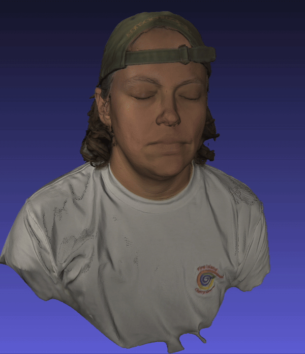

VJ Ass Troll

https://www.instagram.com/slimeslam/
VJ Ass Troll has performed live visuals for queers and peers since the
early ’00s and is a co-creator of the NYC monthly party WOAHMONE which
formally ended in 2016 but still pops up here and there. Their approach
to making visuals spans the spectrum from composite video to infrared
light and sometimes they even use a computer.